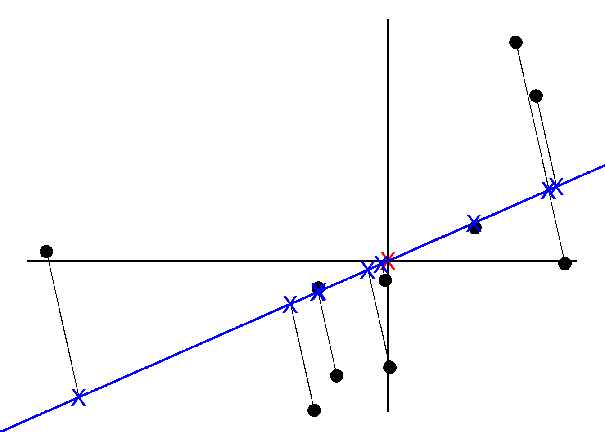

PCA
Principal Component Analysis (PCA) is one of the famous dimensionality reduction methods. When your model has too many variables, PCA helps narrowing them down to two that best explains the model. Let’s walk through the process one-by-one with a model that has two variables.
PCA starts by computing the average (red X in plot 1) of each variable. Then we can plot the center of the data by using these averages:

Next, we shift the data such that the center (marked as red) is at the origin. Note that the relative positions have not changed.
We now find the best line that fits the samples given that the line passes the origin.
To tell how good the fit is PCA projects the samples onto the line and then either find the line that minimizes the distances from the samples to the line or maximizes the distances from the projected points to the origin. Although intuitively it makes sense to go with the former, PCA prefers the latter as the computation is easier. We quantify the distances by adding up the squared distances between the projected points to the origin i.e., sum of squared distances. The line with the largest sum of squared distances is called a Principal Component (PC). We call the sum of squared distances for PC1 the Eigenvalue and the square root the Singular Value

Note the slope is about .30. This means for every 10 units we go along the x axis we go up 3 units along the y axis. So most of our data is spread out along the x axis, hence our x variable is more important when it comes to explaining how the data are spread out. We call this a linear combination of x and y.
Instead of using the original slope, we change the x and y values by making a unit vector (divide by the slope) so that the length of the slope becomes 1. We call this unit vector the Eigenvector or Singular Vector of PC1 and call the proportions of x and y Loading Scores.
To get PC2, we simply draw a line perpendicular to PC1. Then like we did for PC1, we scale to get a unit vector which becomes the Eigenvector for PC2.

To plot the final PCA plot, we rotate so that PC1 is horizontal and then we use the projected points to find the positions of the data points. This is how PCA is performed using Singular Value Decomposition (SVD).
Lastly, we can convert the eigenvalues of PC1 and PC2 into variation
around the origin by dividing by the sample size minus 1. Using the
summarymethod in R, PCA tells us that our PC1 accounts for
82% of variation.
pca <- princomp(df)
# loadings(pca)
summary(pca)## Importance of components:
## Comp.1 Comp.2
## Standard deviation 0.8682098 0.4008325
## Proportion of Variance 0.8243033 0.1756967
## Cumulative Proportion 0.8243033 1.0000000Now we will learn how to perform PCA in Python.
## Python 3.9.6
import pandas as pd
import numpy as np
import random as rd
from sklearn.decomposition import PCA
from sklearn import preprocessing
from matplotlib import pyplot as plt
from sklearn.preprocessing import StandardScaler
from sklearn import datasets
from sklearn.datasets import fetch_openml
from sklearn.model_selection import train_test_split
np.set_printoptions(suppress=True)We will make a toy dataset from a poisson distribution with rows being 10 different customers and columns being 5 different types
customer = ['customer' + str(i) for i in range(1, 11)]
type = ['type' + str(i) for i in range(1, 6)]
data = pd.DataFrame(columns = [*type], index=customer)
data.shape # (10, 5)## (10, 5)np.random.seed(0)
for row in data.index:
data.loc[row, 'type1':'type5'] = np.random.poisson(rd.randrange(10, 1000), 5)
scaler = StandardScaler()
scaled_data = scaler.fit_transform(data)
# Fit
pca = PCA() # returns the same shape as the original data i.e. in our case 5 dimensions as we have 5 variables
# pca = PCA(n_components = 2) # returns 2 principal components
# pca = PCA(.95) # chooses the minimum number of principal components such that 95% of the variance is retained
pca.fit(scaled_data) # computes loading scores and variation for each principle componentPCA()In a Jupyter environment, please rerun this cell to show the HTML representation or trust the notebook.
On GitHub, the HTML representation is unable to render, please try loading this page with nbviewer.org.
PCA()
pca_data = pca.transform(scaled_data) # generate coordinates to plot PCA graph based on the loading scores and the scaled data
pca_data.shape # (10, 5) => returns the same shape as the original data if nothing is specified in PCA()
# scree plot *## (10, 5)var_percentage = np.around(pca.explained_variance_ratio_ * 100, 2)
labels = ['PC' + str(x) for x in range(1, len(var_percentage) + 1)]
plt.bar(x = range(1, len(var_percentage) + 1), height = var_percentage, tick_label = labels)## <BarContainer object of 5 artists>plt.xlabel("PC")
plt.ylabel("Variance %")
plt.title("Scree Plot")
plt.show()
pca_df = pd.DataFrame(pca_data, index=[*customer], columns = labels)
pca_df.shape # (10, 5)
# PCA Plot## (10, 5)plt.scatter(pca_df['PC1'], pca_df['PC2'])
plt.title("PCA Plot")
plt.xlabel(f'PC1 {var_percentage[0]} %')
plt.ylabel(f'PC 2 {var_percentage[1]}%')
for i in pca_df.index:
print(i)
plt.annotate(i, (pca_df.PC1.loc[i], pca_df.PC2.loc[i]))
plt.show()Now We fit PCA using another dataset iris from Michael
Galarnyk’s Medium post. The process is the same as before but we have 3
target labels for this case
iris = datasets.load_iris()
iris_df = pd.DataFrame(iris.data)
iris_df['target'] = iris.target
features = ['sepal_length', 'sepal_width', 'petal_lenth', 'petal_width']
iris_df.columns = features + ['target']
X = iris_df.loc[:, features].values # values: make iris_df np.array
y = iris_df.loc[:, 'target'].values
X_scaled = StandardScaler().fit_transform(X)
# Projects and thus reduces 4D into 2D. No special meaning attached for principal components as they are just the two main dimensions of variation
# First fit with all 4 variables
pca = PCA()
pca_data = pca.fit_transform(X_scaled)
pca_data.shape # 4D
# scree plot *## (150, 4)var_percentage = np.around(pca.explained_variance_ratio_ * 100, 2) # *
labels = ['PC' + str(x) for x in range(1, len(var_percentage) + 1)]
plt.bar(x = range(1, len(var_percentage) + 1), height = var_percentage, tick_label = labels)## <BarContainer object of 4 artists>plt.show()plt.title("Scree Plot")
plt.xlabel("PC")
plt.ylabel("Variance %")
plt.show()
# Scree plot tells us that PC1 and PC2 explains most of the variance of our dataset, hence refit with 2 PCspca = PCA(n_components = 2)
pca_data = pca.fit_transform(X_scaled)
pca_data.shape[1] # 2D## 2labels = ['PC' + str(x) for x in range(1, len(var_percentage) + 1)]
pca_df = pd.DataFrame(data = pca_data, columns = ['PC' + str(x) for x in range(1, pca_data.shape[1] + 1)])
pca_df_with_target = pd.concat([pca_df, iris_df['target']], axis = 1)
targets = [0, 1, 2]
colors = ['r', 'g', 'b']
fig = plt.figure(figsize = (8,8))
ax = fig.add_subplot(1,1,1)
ax.set_xlabel('PC 1', fontsize = 15)
ax.set_ylabel('PC 2', fontsize = 15)
ax.set_title('PCA Plot', fontsize = 20)
for target, color in zip(targets, colors):
indicesToKeep = pca_df_with_target['target'] == target # grabs three target values individually as the target variable is inside a for loop of targets variable -> then will plot ax.scatter individually, hence the for loop acts as a group by
ax.scatter(
pca_df_with_target.loc[indicesToKeep, 'PC1'],
pca_df_with_target.loc[indicesToKeep, 'PC2'],
c = color,
s = 50
)
ax.legend(targets)
plt.show()One can also us PCA to speed up an ML algorithm such as logistic regression after reducing dimensionality using PCA. We started with 784 features from the MNIST dataset that was reduced to 327 principal components which then can be fed for other ML models.
# mnist = fetch_openml('mnist_784')
#
# X_train, X_test, y_train, y_test = train_test_split(mnist.data, mnist.target, test_size=1/7.0, random_state=0)
# X_train.shape # 60,000 images with 784 features each
#
# scaler = StandardScaler()
# X_train_scaled = scaler.fit_transform(X_train)
#
# pca = PCA(.95) # Chooses the minimum number of PCs such that 95% of variance is retained
#
# pca_data = pca.fit_transform(X_train_scaled)
# pca.n_components_ # 327 PCs chosen
# pca_data.shape # (60000, 327)